Emergent Social Behaviour & Dilemmas in Multi-Agent Reinforcement Learning
Electrical Engineering Department — Computer Engineering Programme
June 2026
Abstract
Multi-agent reinforcement learning (MARL) increasingly powers autonomous systems, from traffic control to distributed energy grids, yet a deceptively simple question remains open: when does an explicit coordination mechanism actually earn its keep, and when do independent learners do just as well? This dissertation answers that question on a controlled, inherently cooperative benchmark — traffic signal control on a 2×2 grid of four intersections, simulated in SUMO and trained through Ray RLlib.
A Multi-Agent Proximal Policy Optimization (MAPPO) controller, built around a centralized critic and a neighbour-coupled reward, was implemented and trained to stable convergence. Under a fair, matched-clearance evaluation — in which every controller pays the same realistic safety clearance on each phase change — the learned controller decisively outperforms both the fixed-time and max-pressure heuristics, cutting average waiting time to less than half of max-pressure's and roughly a fifth of fixed-time's. A methodological emphasis of this work is that controllers must be charged the same realistic operating cost for any comparison between them to be meaningful. The project's MAPPO was further confirmed to match the canonical published recipe of Yu et al. (2021), establishing it as a faithful, competitive implementation rather than a weak strawman.
The central result is a surprise. Compared against Independent PPO (IPPO) — a fully decentralized comparator differing only in its decentralized critic and purely local reward — MAPPO proves statistically indistinguishable on every traffic-performance metric across five seeds; the only reliable difference is that the cooperative controller performs slightly more phase switches, with no performance benefit. On a 2×2 network the coordination value (MAPPO − IPPO) is therefore approximately zero. The interpretation is not that coordination is worthless, but that the network is small enough that incentives are already locally aligned, so independent learners recover coordinated behaviour on their own. This locates precisely where explicit coordination should begin to pay off — at larger scales — and motivates the future work of scaling to a 5×5 grid (which was built and whose training was attempted, but proved too expensive on the available hardware) and of extending the study to genuine social dilemmas. The contribution is thus a careful negative result paired with a sharpened hypothesis: the value of cooperation in MARL is not a fixed property of an algorithm but a function of scale.
Keywords: multi-agent reinforcement learning, MAPPO, IPPO, centralized training with decentralized execution, traffic signal control, coordination value, social dilemmas, SUMO, proximal policy optimization.
Table of Contents
List of Figures
- 1.1 The coordination–social-dilemma spectrum2
- 2.1 The reinforcement-learning interaction loop4
- 2.2 PPO's clipped surrogate objective6
- 2.3 Centralized training with decentralized execution9
- 2.4 The Harvest sequential social dilemma10
- 4.1 Composition of the 70-dimensional observation13
- 4.2 The four-phase action space15
- 4.3 The five-component reward function16
- 4.4 Actor and critic network design18
- 5.1 Project Gantt chart21
- 6.1 The 2×2 grid topology and neighbour structure22
- 6.2 Per-approach lane design23
- 6.3 The SUMO–TraCI–RLlib training architecture25
- 6.4 MAPPO vs IPPO: the two design choices27
- 6.5 The 5×5 grid network in SUMO30
- 7.1 MAPPO training reward31
- 7.2 KL divergence and explained variance32
- 7.3 Policy entropy and training losses33
- 7.4 Controllers at matched 3 s clearance34
- 7.5 Three-way comparison (MAPPO / IPPO / paper-baseline)37
- 7.6 Coordination value: MAPPO vs IPPO38
- 7.7 Per-seed average waiting time39
List of Tables
- 2.1 Comparison of representative MARL algorithms8
- 4.1 The four-phase action space15
- 6.1 Shared training hyperparameters26
- 6.2 The Yu et al. (2021) paper-baseline configuration28
- 7.1 Average waiting time with and without clearance33
- 7.2 MAPPO versus IPPO across all metrics36
- 7.3 MAPPO versus the paper-baseline37
- 8.1 Strengths and limitations of the project's MAPPO40
Chapter 1Introduction
This chapter sets out the problem that motivates the dissertation, the gaps in the existing literature that it speaks to, and the single, focused question that the rest of the report works to answer.
1.1 Problem Statement
Multi-agent systems — settings in which several autonomous agents interact to pursue goals, individually or collectively — underpin a growing slice of modern technology. Autonomous vehicles share the same roads, fleets of distributed sensors coordinate to monitor an area, and electricity grids balance supply across many independent producers. What sets these problems apart from classical control is that there is no single decision maker at the centre pulling every lever. Instead there are many decision makers, each acting on its own partial view of the world, and the quality of the whole system emerges from how well — or how badly — those local decisions fit together.
Reinforcement learning (RL) offers a principled way to learn such decisions from experience rather than hand-coding them. An agent observes the state of its environment, takes an action, receives a scalar reward, and gradually adjusts its behaviour to collect more reward over time [1]. The appeal for control problems is obvious: instead of a human engineer anticipating every situation, the agent discovers a policy by trial and error. Over the last decade, deep reinforcement learning has carried this idea from toy grid-worlds to Atari games, robotic manipulation, and beyond [3].
Extending RL from one agent to many — Multi-Agent Reinforcement Learning (MARL) — changes the character of the problem in a way that is easy to underestimate. From the point of view of any one agent, the other agents are simply part of the environment. But those "parts" are themselves learning and changing, so the environment an agent faces today is not the environment it will face tomorrow. A response that is optimal against the current behaviour of the others can become a liability the moment they adapt. This non-stationarity quietly breaks the mathematical assumptions that make single-agent RL stable and convergent, and it is the root cause of most of the difficulty in MARL [15].
Crucially, the relationship between the agents is not fixed. Sometimes cooperation benefits everyone, and the interesting challenge is simply getting agents to discover the coordinated behaviour. At other times genuine conflict is built into the problem: an agent can exploit a shared resource for private gain while quietly pushing the cost onto the collective. Understanding when cooperation emerges versus when exploitation dominates is central to deploying autonomous agents responsibly, and it is the broad theme this project sits within.
To study that theme without drowning in the complications of an open-ended environment, this dissertation uses traffic signal control as a controlled, representative case. Each intersection in a road network is treated as an agent: it observes the local traffic state, chooses which signal phase to show, and is rewarded for keeping vehicles moving. Traffic is an unusually clean testbed for the cooperation question because network effects align the incentives almost perfectly — when one intersection causes gridlock, the congestion backs up and eventually hurts that very intersection too. There is, in other words, nothing to be gained by "defecting." Traffic therefore sits at the pure-coordination end of the cooperation spectrum drawn in Figure 1.1, which makes it the ideal place to isolate one specific question: how much does an explicit coordination mechanism actually add when the incentives are already pulling in the same direction?
A concrete picture helps. Imagine two intersections on a single arterial, one feeding directly into the other. If the upstream signal releases a long platoon just as the downstream signal turns red, that platoon slams into a growing queue, the queue spills back, and within a minute both intersections are clogged — including the upstream one that caused the problem. If instead the two signals are phased so the platoon meets a green downstream, traffic flows through both. No intersection gains anything by being "selfish" here; over any reasonable horizon, the only way to do well locally is to do well jointly. That is what it means for incentives to be aligned, and it is why a controller can stumble into coordinated behaviour even without being explicitly told to coordinate. The whole purpose of this dissertation is to measure how much an algorithm that is explicitly told to coordinate gains over one that is not, in exactly this kind of aligned setting.
1.2 Research Gap
Despite a decade of rapid progress, several questions in MARL remain underexplored, and four are worth naming because they frame what follows.
- The middle of the spectrum. Most published work targets either purely cooperative settings or purely competitive games such as chess, Go, and poker. The continuum between those extremes — where coordination and competition coexist and the balance between them can tip — receives far less systematic attention.
- Reward structure. It is well known that reward shaping matters, but careful, controlled comparisons of individual versus shared reward signals, holding everything else constant, are surprisingly rare. Without that control it is hard to attribute a behavioural difference to the reward rather than to some incidental change.
- Fairness. Algorithms are usually judged on total system performance, with little attention to how the benefit is distributed across the individual agents. A controller that is excellent on average may achieve this by treating some agents far worse than others.
- Scalability of coordination. How the value of a coordination mechanism changes as a system grows — from a handful of agents to a large network — has not been characterized cleanly. It is often assumed that more sophisticated coordination is always better, but whether that holds at every scale is an empirical question.
This dissertation engages most directly with the first and fourth of these gaps. It asks a deceptively simple question on a controlled traffic benchmark: does an explicitly cooperative algorithm — MAPPO, with its centralized critic and coordination-aware reward — actually outperform a set of independent learners (IPPO) when the two are matched in every other respect? The answer turns out to be more interesting than a plain "yes," and the reason behind the answer, rather than the answer alone, forms the spine of the report. By pinning down the value of coordination at the smallest meaningful network size, the work also establishes the zero-point of a curve that larger networks and genuine social dilemmas can later be measured against.
Chapter 2Background and Literature Review
This chapter builds up the ideas the dissertation rests on, moving from single-agent reinforcement learning through deep RL and policy-gradient methods to the multi-agent case, and finally to the two literatures the project sits between: social dilemmas and MARL for traffic signal control.
2.1 Reinforcement Learning
Reinforcement learning gives a mathematical framework for an agent that learns optimal behaviour purely through interaction. Its foundation is the Markov Decision Process (MDP), which has four ingredients: a set of states describing the environment, a set of actions the agent may take, transition dynamics mapping a state–action pair to a distribution over next states, and a reward signal scoring each transition. The agent seeks a policy — a mapping from states to actions — that maximizes the expected cumulative discounted return, where a discount factor γ trades off immediate against future reward [1].
The central object that makes this tractable is the value function, and the relationship it satisfies is the Bellman equation: the value of a state equals the immediate reward plus the discounted value of its successor. This recursive structure is what lets algorithms bootstrap, estimating one value from another rather than waiting for the full return to play out. Classical methods such as Q-learning exploit exactly this, iteratively refining an estimate of the optimal action-value function after each interaction and, in doing so, tackling the credit-assignment problem of deciding which past actions deserve credit for a later outcome [2]. The interaction loop that all of this is built on is shown in Figure 2.1.
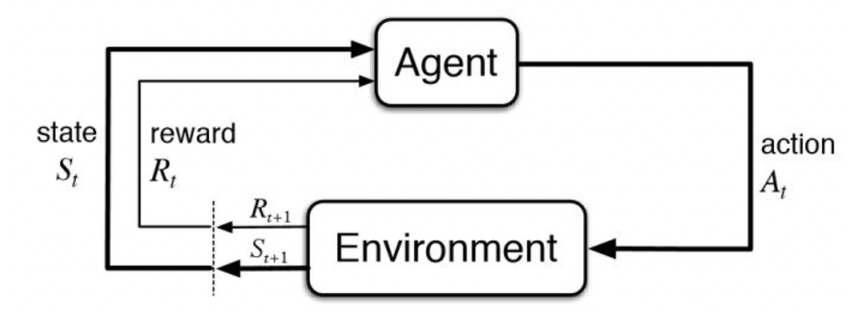
2.2 Deep Reinforcement Learning
Tabular methods keep a separate value for every state–action pair, which is fine for small problems but hopeless once the state space is large or continuous — a traffic network with real-valued queue lengths has effectively infinite states. Deep Reinforcement Learning (DRL) removes this wall by replacing the table with a neural-network function approximator that generalizes across similar states. The Deep Q-Network (DQN) was the landmark demonstration, learning to play Atari games directly from pixels with two stabilizing tricks: experience replay, which samples past transitions out of order to break the temporal correlations that otherwise destabilize training, and a target network, a slowly updated copy of the value network that keeps the bootstrap target from chasing its own tail [3].
DQN is value-based: it learns a value function and acts greedily with respect to it. A complementary family, the policy-gradient methods, skips the intermediate value function and optimizes the policy directly by ascending the gradient of expected return. The REINFORCE algorithm established the basic recipe [5], and actor–critic methods refined it by pairing a policy (the actor) with a learned value function (the critic) that reduces the variance of the gradient estimate [8]. Asynchronous variants such as A3C scaled this idea across many parallel workers [4].
Running underneath all of these methods is the exploration–exploitation trade-off: an agent must keep trying actions whose value it is unsure of in order to discover good behaviour, yet it must also exploit what it already knows in order to perform well. Value-based methods usually handle this with explicit randomness, such as occasionally acting at random; policy-gradient methods bake it into the policy itself, which stays stochastic and is gently encouraged to remain so by an entropy bonus in the objective. This entropy term matters in practice — too little and the policy collapses prematurely onto a mediocre habit, too much and it never commits to anything. It reappears later as one of the diagnostics tracked during training, where a gradual rather than sudden decay of entropy is a sign of healthy learning.
The policy-gradient method that has become the modern default is Proximal Policy Optimization (PPO) [6]. PPO's key idea is to limit how far the policy may move in a single update through a clipped surrogate objective: if a proposed update would change the probability of an action by more than a set fraction, the objective is clipped so that there is no further incentive to push past that band. This single trick prevents the destructive, over-large updates that plagued earlier policy-gradient methods, while keeping the algorithm simple and reasonably sample-efficient. The mechanism is sketched in Figure 2.2. PPO is almost always paired with Generalized Advantage Estimation (GAE) [7], which estimates how much better an action was than average by exponentially weighting temporal-difference errors over many horizons, trading off bias against variance through a single parameter λ. Together, PPO and GAE are the workhorse behind nearly every result in this dissertation.
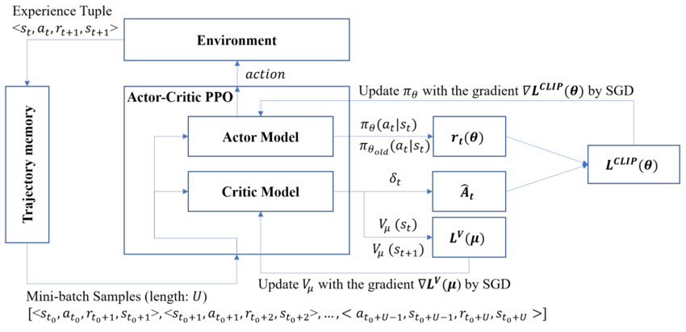
2.3 Multi-Agent Reinforcement Learning
2.3.1 Fundamental Challenges
Putting several learning agents in the same environment introduces difficulties that simply do not exist in the single-agent case. Non-stationarity is the deepest of them: each agent treats the others as part of its environment, but those components keep changing as the others learn, which violates the stationary-transition assumption that underwrites single-agent convergence guarantees. Credit assignment becomes much harder when a team shares one reward, because it is no longer obvious which agent's action was responsible for a good or bad outcome. And the joint action space grows exponentially: four agents each choosing among four actions already produce 44 = 256 joint actions, so any method that reasons over the joint space directly is doomed to scale poorly [15]. The practical response is to decompose the global problem into local subproblems that each agent can solve from its own observation, while finding some way to keep the agents pulling in the same direction [16].
It is worth being concrete about why non-stationarity is so corrosive. In single-agent RL the convergence arguments for value iteration and policy gradients all lean on the environment being a fixed MDP, so that a value learned today remains meaningful tomorrow. The instant a second learning agent enters, that fixed MDP dissolves: the effective transition and reward functions that any one agent experiences now depend on the others' current policies, which are themselves moving. From one agent's perspective the ground is shifting under its feet, and an experience buffer collected against yesterday's opponents can actively mislead. This is also why naively reusing single-agent tricks — large replay buffers, off-policy updates — can backfire in the multi-agent setting, and why on-policy methods such as PPO, which always learn from fresh data generated by the current joint policy, are a popular foundation for MARL despite their lower sample efficiency. Recent surveys document a wide menu of responses to these difficulties, from opponent modelling to centralized critics to communication channels, but no single method dominates across every cooperative, competitive, and mixed setting [17].
2.3.2 Algorithmic Approaches
Independent learning is the simplest answer of all. Independent Q-Learning (IQL) lets each agent run its own single-agent algorithm and ignore the multi-agent structure entirely, treating the others as part of the environment [9]. It is simple, it scales linearly with the number of agents, and it works surprisingly often in practice when the agents do not interfere too strongly — but it has no convergence guarantee and can struggle badly with cooperative credit assignment. Its policy-gradient analogue, Independent PPO (IPPO), applies PPO independently to each agent and is the "fully independent learners" baseline used throughout this dissertation.
Value-decomposition methods attack credit assignment head-on by learning how individual agents' values combine into a team value. Value-Decomposition Networks (VDN) take the simplest route, summing per-agent values into a team value [12]. QMIX generalizes this by learning a monotonic mixing of individual values, which guarantees that improving any one agent's value improves the team's, while still allowing fully decentralized execution [13]. The monotonicity constraint buys decentralizability at the cost of expressiveness, and these methods are confined to cooperative settings. COMA took a different angle, using a centralized critic and a counterfactual baseline to isolate each agent's contribution to the shared reward [11].
What unifies the strongest of these methods is the Centralized Training with Decentralized Execution (CTDE) paradigm, illustrated in Figure 2.3. The insight is that the two phases of an agent's life have different information budgets. During training — done offline, in simulation — it is perfectly acceptable to use privileged global information, such as every agent's observation and action, to stabilize learning and tame non-stationarity. During execution — done online, in deployment — each agent must act on its local observation alone, with no global oracle and no inter-agent communication. CTDE keeps the best of both: a powerful, globally informed training signal and a lightweight, scalable deployed policy. A useful analogy is a sports team. In practice, a coach watches every player at once and teaches them how to coordinate; in the match, the players act independently on what each can see, applying what the coach taught them.
MADDPG pioneered CTDE for actor–critic methods, giving each agent a centralized critic that sees all observations and actions during training and a decentralized actor at execution [10]. MAPPO marries that centralized-critic architecture to PPO's robust optimization: a shared centralized value function consumes all agents' observations during training, each agent keeps its own decentralized policy, PPO clipping prevents destructive updates, and GAE stabilizes the advantages [14]. The original MAPPO study reported that this conceptually simple combination matches or beats more specialized cooperative algorithms across a range of standard benchmarks, which is precisely why it is the natural "sophisticated cooperative method" to put to the test in this project. Table 2.1 summarizes how these algorithms relate.
| Algorithm | Training | Execution | Key characteristics |
|---|---|---|---|
| IQL / IPPO | Independent | Decentralized | Simple and scalable; treats others as environment; no guarantee under non-stationarity |
| VDN / QMIX | Centralized mixer | Decentralized | Monotonic value factorisation; cooperative settings only |
| COMA | Centralized critic | Decentralized | Counterfactual baseline for credit assignment |
| MADDPG | Centralized critic | Decentralized | Actor–critic CTDE; continuous actions; less stable, limited scalability |
| MAPPO | Centralized critic | Decentralized | PPO-based; stable updates; strong coordination and scalability |
2.4 Social Dilemmas in Multi-Agent Systems
Social dilemmas describe situations in which individually rational behaviour produces a collectively poor outcome — the exact opposite of the aligned-incentive world of traffic. The Prisoner's Dilemma is the canonical example: two agents both do better under mutual cooperation, yet each maximizes its own payoff by defecting regardless of what the other does, so rational self-interest drives both to a worse outcome than they could have reached together. The Tragedy of the Commons scales this intuition up to a shared resource: every user benefits privately from over-using it while the cost is spread across everyone, creating a steady pressure toward over-exploitation that eventually destroys the resource for all [19]. Sequential social dilemmas embed these incentives in grid-world environments that unfold over many timesteps, so that the temptation to defect is not a one-shot choice but a behaviour the agents must learn to manage over time [18]. The "Harvest" commons, in which agents collect slowly regrowing apples and over-harvesting permanently depletes a region, is a standard example. Social dilemmas sit at the opposite end of the spectrum from traffic, and this project treats them as the natural next environment rather than part of the current scope; they return in the future-work discussion of Chapter 9. The Harvest environment is shown in Figure 2.4, and it is instructive to contrast it with traffic: where a traffic agent that floods its own approach eventually chokes itself, a Harvest agent that strips a patch of apples bare can walk away unharmed while its neighbours inherit the depleted ground. The cost of selfishness is paid by someone else. That single structural difference — whether defection is self-punishing or not — is the axis this project's traffic study sits at one end of, and it is what makes the social dilemma the natural complement to everything that follows.

2.5 MARL for Traffic Signal Control
Traffic signal control maps onto MARL almost without forcing. Each traffic light is an agent that observes its local traffic state, selects a signal phase, and is rewarded for traffic efficiency; because intersections are coupled through the vehicles that flow between them, an agent that optimizes only its own corner can still create problems elsewhere in the network. Traditional fixed-time controllers run a pre-set cycle and actuated controllers react to local detectors, but both need manual tuning and cope poorly with the non-recurring congestion that real networks throw at them. RL promises adaptive controllers that learn good timing from experience instead. Early single-intersection deep-RL controllers already improved on classical methods [23], but, acting in isolation, they missed the network effects in which a locally good decision sows a downstream problem [24].
The response in the literature was to make agents aware of their neighbours. CoLight gave each agent information about adjacent intersections and shared network parameters across agents, inducing genuinely coordinated behaviour at city scale despite decentralized execution [20]. A particularly effective and theoretically grounded family is pressure-based control, which steers toward the phase that best relieves the imbalance between incoming and outgoing vehicles per movement and connects directly to max-pressure control from transportation theory [21]. A large-scale study by Chu et al. is especially relevant here: it found that sharing neighbour information significantly improves network performance, but only with careful reward design — naive purely individual rewards, where each intersection minimizes only its own delay, can actively harm overall throughput, while well-designed shared rewards help but demand careful algorithm design to scale [22].
One observation from this literature motivates the entire dissertation. From a system designer's standpoint, traffic is fundamentally cooperative: network effects align the incentives, because gridlock hurts the very agent that caused it. That makes traffic an excellent, controlled environment for asking a sharper question than "can RL control traffic?" — namely, whether an explicit coordination mechanism is actually necessary at a given scale, or whether independent learners equipped with the same local information can recover the same coordinated behaviour on their own. That is the question Chapter 3 turns into concrete objectives.
2.6 Positioning of This Work
It helps to say plainly where this dissertation sits in the landscape just sketched. It is not a proposal for a new algorithm; MAPPO and IPPO are both established methods. Nor is it a benchmark-chasing exercise aimed at squeezing out a new best score on a standard task. Its contribution is comparative and diagnostic: it takes a well-understood cooperative algorithm and a well-understood independent-learning algorithm, makes them differ in the smallest possible way, and measures what that difference is actually worth on a problem where the answer is not obvious in advance. The traffic literature reviewed above tends to report that coordination helps, but it usually does so on large city-scale networks and with methods that bundle several innovations together, which makes it hard to attribute the gain to any one ingredient [20][22]. By shrinking the network to its smallest interesting size and isolating exactly two design choices, this work asks a question that the large-scale studies cannot cleanly answer: at what point does the coordination machinery start to earn its keep? The value of the resulting answer — even when, as here, it is a negative one — is that it fixes one end of a curve the field usually only observes from the far end.
Chapter 3Objectives
The overarching aim of this research is to study emergent social behaviour, cooperation, and the value of coordination in multi-agent reinforcement learning, using traffic signal control as a controlled, inherently cooperative case study. That aim resolves into four concrete, realized objectives.
- Establish a strong cooperative baseline. Implement and train a MAPPO traffic-signal controller on a 2×2 grid, demonstrate that it converges stably, and then validate it against the two standard heuristic controllers — fixed-time and max-pressure — under a fair evaluation protocol in which every controller pays the same real-world operating cost. This objective is what makes the later comparisons trustworthy: a weak or badly evaluated baseline would render every downstream conclusion meaningless.
- Confirm implementation fidelity. Compare the project's MAPPO configuration against the canonical published recipe of Yu et al. [14], to establish that the cooperative agent is a faithful, competitive implementation of the method and not a weakened strawman built to lose. This is the "external comparison" the report devotes a dedicated section to.
- Quantify the value of coordination. Implement Independent PPO (IPPO) as a fully decentralized comparator that differs from MAPPO in exactly its two defining design choices — a decentralized critic and a purely local reward — and measure the coordination value, defined as the performance difference MAPPO − IPPO. This is the "internal comparison" and the analytical heart of the dissertation.
- Characterize and interpret the result. Analyze why the measured coordination value takes the value it does at this network scale, rather than merely reporting a number, and connect the finding to the broader question of how coordination mechanisms should be expected to scale with network complexity.
Two further ambitions — characterizing the efficiency–equity trade-off across agents, and contrasting pure coordination against a genuine social dilemma — frame the future work set out in Chapter 9. There, scaling the network up to a 5×5 grid and introducing a social-dilemma environment are identified as the natural next steps that the project's compute budget placed beyond the scope of this submission. As Chapter 6 documents, the 5×5 network was in fact constructed and a training run attempted, which gives the future-work discussion a concrete, evidenced starting point rather than a purely speculative one.
Chapter 4Detailed Tasks
This chapter breaks the project into the concrete engineering tasks that were carried out: the literature foundation, the design of the agent's observation, action and reward, the neural-network models, and the experimental pipeline that turns all of it into measured results. It is deliberately design-focused; the system that ties these pieces together is described in Chapter 6, and the numbers they produce appear in Chapter 7.
4.1 Task 1 — Literature and Theoretical Foundation
The first task was to survey the MARL algorithms most relevant to a cooperative control problem — chiefly QMIX, MADDPG and MAPPO — alongside the social-dilemma literature and the body of work on RL for traffic signal control, and to settle on the CTDE paradigm as the right frame for the project. An early implementation actually started from QMIX, but as a monotonic value-decomposition method it handled the interactions between intersections awkwardly. MAPPO was adopted instead because its centralized critic supplies stable gradients while its decentralized actors let each agent act on local observations alone — the combination the rest of the project is built on. This grounding is what Chapter 2 reports in full.
The choice of MAPPO over the value-decomposition alternatives is worth a sentence of justification, because it was a deliberate decision rather than a default. QMIX and its relatives factor a team value into per-agent pieces under a monotonicity constraint, which is elegant but bakes in an assumption — that each agent's contribution to the team value is monotone in its own local value — that is awkward to defend in a traffic network where one intersection's best move can depend sharply on a neighbour's state. MAPPO sidesteps factorisation entirely: it lets a single centralized critic learn the joint value directly from the global state and uses that to shape decentralized actors. Combined with PPO's well-known training stability, this made MAPPO both the stronger candidate for the cooperative end of the comparison and the cleaner one to contrast against an independent learner, since stripping the centralized critic and the neighbour reward yields IPPO without changing anything else.
4.2 Task 2 — Agent Design: Observation, Action and Reward
4.2.1 Observation-vector design
Each agent observes a 70-dimensional vector, designed so that everything an intersection needs to act well is present in a fixed-size input. Of the 70 numbers, 28 describe the agent's own state and 42 summarize its two neighbours, as broken down in Figure 4.1. The 28 local features are: per-movement queue lengths (four edges × three movements = 12), a one-hot encoding of the current signal direction (2), the elapsed time in the current phase normalized by its maximum (1), movement pressures defined as incoming minus outgoing vehicle counts (6), the derivatives of those pressures, capturing whether congestion is building or easing (6), and a binary min-green flag (1). The 42 neighbour features carry, for each of the two adjacent intersections, that neighbour's shared queues, signal direction, combined pressures, and the directional incoming/outgoing metrics across the shared road — all spatially discounted with γs = 0.9 so that nearer intersections count for more.
The inclusion of the neighbour block and the pressure derivatives is a considered choice rather than a kitchen-sink one. The pressure derivatives let an agent see not just how congested a movement is but whether the congestion is building or clearing, which is what makes anticipatory rather than purely reactive timing possible. The neighbour features are what give an independent learner a fighting chance of behaving coordinately: even without a centralized critic, an IPPO agent can read a neighbour's queues and phase directly from its own observation and respond to them. This is a subtle but important point for the comparison, because it means the gap between MAPPO and IPPO is genuinely about the centralized critic and the neighbour reward, not about whether the agent can perceive its neighbours at all — both can. The spatial discount simply encodes the physical intuition that a queue one intersection away matters more than one two intersections away, because traffic from the nearer one arrives sooner.
4.2.2 Action-space design
The action space is discrete with four green phases that follow standard traffic-engineering practice, listed in Table 4.1 and drawn in Figure 4.2. At each decision the agent picks one of north–south through/right, north–south left, east–west through/right, or east–west left; right turns are permissive in every phase. Keeping the action set this small and standard means the policy chooses what movement to serve next rather than micromanaging signal strings, which keeps learning tractable while staying faithful to how real signals are programmed.
| Action | SUMO phase | Movement served |
|---|---|---|
| a0 | Phase 0 | North–south through and right turns |
| a1 | Phase 6 | North–south left turns |
| a2 | Phase 2 | East–west through and right turns |
| a3 | Phase 4 | East–west left turns |
4.2.3 Reward-function design
The reward is the lever that defines what "good" means, and it was deliberately built from five weighted components so that the agent balances several objectives at once rather than chasing a single proxy. In the project's canonical configuration (referred to throughout as configuration v2) the per-step reward is
rt = −1.0·Wt − 0.25·Qt + 0.1·Tt − 0.4·Pt − 0.4·Nt (4.1)
clipped to the range [−3.0, 1.0]. The five terms, whose relative magnitudes are drawn in Figure 4.3, are:
- Wt — cumulative waiting time (weight −1.0), the primary objective, measured over all vehicles via the lane-area detectors. This dominates the reward, which is what keeps the agent focused on actually moving traffic.
- Qt — queue length (weight −0.25), the count of halted vehicles, which discourages the build-up that leads to spillback.
- Tt — throughput (weight +0.1), the number of completed trips; this is a network-wide shared term measured across the whole city, rather than per-agent.
- Pt — local pressure (weight −0.4), the queue imbalance between incoming and outgoing lanes at the agent's own intersection.
- Nt — neighbour pressure (weight −0.4), the spatially discounted pressure from adjacent intersections (γs = 0.9). This is the single explicit multi-agent coupling term in the reward, and it is the lever that distinguishes MAPPO from IPPO in Chapter 6.
A few design choices in this reward deserve comment. Waiting time is weighted most heavily because it is the outcome road users actually feel, and making it dominant keeps the agent from gaming a proxy — a policy can reduce queue length for a moment by flushing one approach, but it cannot fake low waiting time without genuinely moving traffic. The queue and pressure terms act as denser, faster-reacting shaping signals that give the agent useful gradient on every step rather than only when a vehicle finally completes its trip. The throughput term is kept small and positive as a gentle nudge toward completing trips, and the whole reward is clipped to a bounded range so that a single catastrophic step — a sudden total gridlock — cannot dominate the gradient and destabilize learning. The neighbour term is deliberately the only piece that reaches outside the agent's own intersection, which is what lets the MAPPO-versus-IPPO comparison turn it cleanly on and off.
4.3 Task 3 — Neural-Network Models
Two networks were implemented, an actor and a critic, shown together in Figure 4.4. The actor is decentralized: it maps the agent's 70-dimensional local observation through two hidden layers of 256 units with tanh activations to four action logits. The critic is centralized: it consumes the 280-dimensional global state — the four agents' observations concatenated — through hidden layers of 512, 256 and 128 units with ReLU activations to a single scalar value estimate. All four agents share a single set of actor weights (parameter sharing across the homogeneous intersections), so one policy is trained from the experience of all four. Orthogonal initialization and a running observation normalizer (a MeanStdFilter) are used throughout, both of which are standard stabilizers in strong PPO implementations.
4.4 Task 4 — Experimental Pipeline and Evaluation Design
The final design task was the experimental machinery: building the environment, wiring up training, and defining how controllers would be judged. The environment, training configuration, and full system architecture are documented in Chapter 6; what matters here is the set of metrics chosen to evaluate learning and behaviour, because they determine what conclusions can be drawn.
Training was tracked through five quantities. Episode reward is the average return across agents and is the headline learning signal. Explained variance measures how well the critic's value predictions match the actual returns; values near one mean accurate prediction, near zero mean no better than guessing the mean, and negative values signal a failing critic. KL divergence measures how far each policy update moves the policy, and PPO watches it to make sure updates stay conservative. Entropy measures how random the policy still is — high entropy means the agent is still exploring, and for four actions the maximum is ln(4) ≈ 1.39. Finally, value and policy loss track the two halves of the optimization. Behaviour at evaluation was judged on traffic outcomes — average and maximum waiting time, queue (halting) counts, completed trips, and the number of phase switches — which are the quantities Chapter 7 reports. Designing IPPO and the paper-baseline as controlled comparators (changing only what must change) was part of this same task, and the precise contrasts are spelled out in Chapter 6.
Chapter 5Project Plan and Gantt Chart
A graduation project that includes multi-day training runs lives or dies by its schedule, so the work was planned around the constraint that compute, not ideas, would be the bottleneck. This chapter lays out how the two semesters were structured and where the plan bent under that constraint.
5.1 Two-Semester Structure
The project ran across two semesters with a clear division of labour. Semester 1 established the coordination baseline: implementing the MAPPO controller on the 2×2 grid, getting the SUMO–RLlib stack working end to end, and demonstrating stable convergence against the heuristic baselines. Semester 2 was the comparative study: building IPPO as the independent-learner comparator, reproducing the Yu et al. paper-baseline as a fidelity check, fixing the evaluation protocol so that all controllers are compared fairly, and running the multi-seed evaluations that produce the central result. The Gantt chart in Figure 5.1 lays these phases out over the project calendar.

5.2 Where the Plan Adapted
The original Semester 2 plan was ambitious: it included scaling the network from 2×2 to 5×5, training both algorithms at that scale, and then adding a separate social-dilemma environment. As the work progressed it became clear that the MAPPO-versus-IPPO and MAPPO-versus-paper comparisons on the 2×2 grid were the experiments that actually carry the research conclusions, and that the scale-up — while valuable — is implementation-heavy and enormously compute-hungry without changing those conclusions. The 5×5 network was therefore built and a training run attempted (Chapter 6), but a single training iteration took on the order of nine to twelve hours on the available hardware, which made a full run infeasible inside the project window. The scale-up and the social-dilemma environment were consequently re-scoped as future work (Chapter 9). This was a deliberate prioritization decision rather than a failure of planning: it concentrated the limited compute budget on the experiments that answer the research question, and it is reflected in the later phases of Figure 5.1.
Chapter 6Implementation
This chapter describes how the design of Chapter 4 was turned into a working system: the software stack, the simulated environment, the way data is generated in the absence of any fixed dataset, the training architecture, the two algorithms under comparison and the published baseline, the fair evaluation protocol, and finally the attempt to scale the whole thing up to a 5×5 grid.
6.1 Technical Stack
The environment is built on SUMO (Simulation of Urban MObility), an open-source microscopic traffic simulator that models every vehicle individually [25]. SUMO is driven from Python through TraCI (the Traffic Control Interface), which lets the learning code read detector values and set signal phases step by step. On the learning side the project uses Ray RLlib, a scalable reinforcement-learning library that handles the distributed collection of experience and the multi-agent training loop [26], with the neural networks implemented in PyTorch [27]. Training ran on a single workstation with one NVIDIA RTX 3060 Ti GPU for the network updates and an AMD Ryzen 5 3600 CPU supplying three parallel rollout workers, each running its own SUMO instance. This modest, single-machine setup is important context for the scaling discussion: it is comfortably enough for the 2×2 grid and decidedly not enough for the 5×5 one.
The choice of a microscopic simulator is deliberate. SUMO models each vehicle's position, speed and car-following behaviour individually rather than treating traffic as an aggregate flow, which is what makes the queue, pressure and waiting-time signals the reward depends on physically meaningful. The price of that fidelity is computational: every simulation step advances every vehicle, so the cost of a step scales with the number of vehicles on the network — the very fact that makes the 5×5 grid so expensive. On the interface side, the project uses standard TraCI rather than the faster in-process libsumo binding, because libsumo proved unreliable to start on this particular setup; the modest per-step overhead of TraCI is a reasonable price for a simulation loop that actually runs, and it does not change any result, only the wall-clock time to obtain it.
6.2 The 2×2 Environment
The environment is a 2×2 grid of four signalized intersections, labelled J1 to J4, each controlled by one agent. The topology and the neighbour relationships that the observation vector depends on are shown in Figure 6.1. Roads between intersections are 150 m long and the entry/exit roads are 100 m; every road has three lanes under strict directional assignment — lane 0 for right turns, lane 1 for straight-through, and lane 2 for left turns — as drawn in Figure 6.2. Lane-area detectors span the full length of each lane, giving the agents complete observability of vehicle positions, speeds and waiting times.
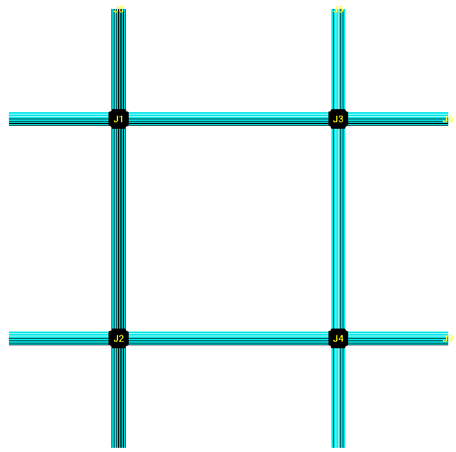
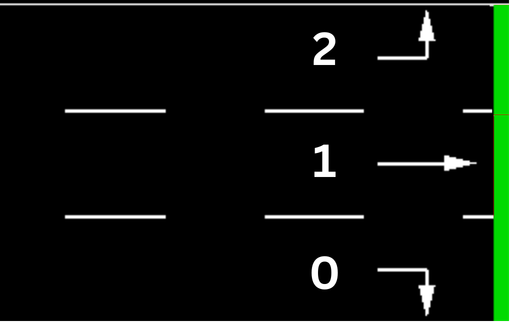
An episode lasts 3,600 simulated seconds with a 5-second action interval, giving up to 720 decision points per agent. The demand profile is deliberately realistic and time-varying rather than uniform: traffic is light from 0 to 600 s, rises to a sustained rush hour from 600 to 2,400 s, then eases back to light traffic for the final stretch. This shape matters, because a controller that looks good under light load may fall apart under the rush, and the agents have to learn timing that holds up across the whole profile.
6.3 The Environment as a Data Source
A point worth dwelling on, because it sets reinforcement learning apart from the supervised machine-learning projects this report might otherwise be compared with, is that there is no fixed dataset here at all. There is no folder of labelled examples collected ahead of time, no train/validation/test split in the conventional sense, and nothing to download. The "data" is generated on the fly: at every step the agent acts, SUMO advances the simulation, and the resulting transition — observation, action, reward, next observation — becomes one more training sample. The dataset is therefore a product of the policy that is being trained, and it shifts continuously as that policy improves. Early in training the agents wander into long queues and the data is full of gridlock; late in training the same network produces free-flowing traffic and the data looks completely different. This moving-target quality is precisely the non-stationarity that makes RL — and especially MARL — hard.
Two design choices stand in for the usual notion of a dataset. The first is the demand profile described above, which is the closest thing the project has to a "distribution" the agents must fit: the fixed light–rush–light schedule of vehicle insertions defines the population of situations the controller is trained and tested on. The second is the random seed, which controls the micro-level behaviour of individual vehicles (car-following, lane choice, minor timing). Training uses a fixed seed for reproducibility, and evaluation sweeps a small set of held-out seeds (42 through 46) so that the reported numbers reflect performance across several independent realizations of the same demand rather than a single lucky or unlucky run. In that sense the seed sweep plays the role a test set would play elsewhere: it measures how the learned policy generalizes across variation it did not see in any single training episode. Because the demand itself is deterministic, this variation is genuinely micro-level, which is why the multi-seed results in Chapter 7 are tight and trustworthy for this scenario.
This framing also clarifies what a result here does and does not claim. Because the demand profile is fixed, the controllers are trained and judged on one well-defined traffic scenario rather than on an exhaustive sample of every condition a real network might see. That is the right scope for a controlled comparison — it removes demand variability as a confound, so any difference between MAPPO and IPPO must come from the algorithms rather than from one happening to see easier traffic. It does, however, mean that conclusions are stated for this scenario, and broadening the demand distribution is a natural robustness extension. The deliberate light–rush–light shape was chosen precisely so that the single scenario is not trivially easy: a controller has to cope with a genuine congestion build-up and the recovery afterwards, not merely hold steady under a constant trickle of cars.
6.4 Training Architecture
Training follows the standard distributed-RL pattern, sketched in Figure 6.3. A central driver process holds the master copy of the policy and critic weights on the GPU. Three rollout workers run in parallel on CPU cores, and each owns its own SUMO simulation reached over a unique TraCI port; the workers collect experience by running the current policy in their environments and shipping the resulting trajectories back to the driver. Once enough experience has accumulated (the batch), the driver performs the PPO update — several epochs of clipped policy-gradient steps over the batch — and broadcasts the new weights back to the workers for the next round. Batching is done over complete episodes so that advantages are computed over full trajectories, and a running observation normalizer keeps the inputs well-scaled as the data distribution drifts. Parallelizing the rollouts this way is what makes the wall-clock training time manageable on a single machine, and it is also why the per-iteration cost explodes at larger network sizes, where each SUMO step simulates far more vehicles.
The shared training hyperparameters — identical for MAPPO and IPPO so that the comparison is controlled — are listed in Table 6.1. They follow established strong-PPO practice: a discount of 0.99 for long-horizon optimization, GAE λ = 0.95, a clip of 0.2, and a full-batch update in which the minibatch equals the train batch.
| Hyperparameter | Value | Note |
|---|---|---|
| Learning rate | 5×10−4 | balanced convergence and stability |
| Discount factor γ | 0.99 | long-horizon optimization |
| GAE λ | 0.95 | bias–variance trade-off |
| PPO clip ε | 0.2 | limits policy change per update |
| Value clip | 10.0 | limits value-function jumps |
| Gradient clip | 1.0 | prevents exploding gradients |
| Entropy coefficient | 0.02 | encourages exploration |
| Value-loss coefficient | 1.0 | weights value vs policy loss |
| SGD iterations / update | 15 | epochs over each batch |
| Minibatch / train batch | 32768 / 32768 | single full-batch update |
| Rollout workers | 3 | parallel experience collection |
| Rollout fragment | 200 | complete-episode batching |
| Training iterations | 200 | to stable convergence |
| Observation filter | MeanStdFilter | running mean/std normalization |
6.4.1 Reproducibility and parallel simulation
Two practical details make the difference between results that can be trusted and results that cannot. The first is reproducibility. Random seeds are fixed for NumPy, PyTorch and SUMO so that a training run can be repeated and a checkpoint re-evaluated to the same numbers; the demand schedule is deterministic, and only the evaluation seed is varied (across the held-out set 42–46) to probe robustness. The second is safe parallelism. Because three workers each launch their own SUMO process, they must not collide on a network port. Each worker therefore derives a unique TraCI port from its process identifier, with a few retries on the rare collision, so the three simulations stay completely independent. This is invisible when it works and catastrophic when it does not — two workers sharing a port silently corrupt each other's rollouts — which is why it is worth stating explicitly as part of the implementation.
6.5 Algorithms Under Comparison
The internal comparison is only as good as its control, so MAPPO and IPPO were built to differ in exactly two things — the two design choices that define "cooperative MARL" versus "independent learners" — and to be identical in every other respect, down to the actor architecture and every hyperparameter in Table 6.1. The two differences are drawn side by side in Figure 6.4.
- MAPPO (cooperative). A centralized critic reads the 280-dimensional global state, and the neighbour-pressure reward term Nt is active. This is the full cooperative package: CTDE training plus an explicitly coordination-aware reward.
- IPPO (independent). A decentralized critic reads only the agent's own 70-dimensional observation, and the neighbour-pressure weight is set to zero so each agent optimizes a purely local objective. Parameter sharing is retained exactly as in MAPPO. This is the fully independent-learners package.
It is worth being precise about one subtlety. The throughput term Tt is a network-wide signal and is kept in both algorithms, so IPPO is most accurately described as having "no explicit neighbour coupling" rather than a strictly per-agent reward. Because that term is held constant across both controllers, it does not confound the comparison; the only things that change between MAPPO and IPPO are the critic's information and the neighbour-pressure term, which is exactly the cooperative-versus-independent contrast the study is after.
6.5.1 The paper-baseline (fidelity check)
To rule out the worry that the project's MAPPO is a weak strawman, it is also compared against the canonical recipe of Yu et al. [14], using their adopted MLP preset. The settings are listed in Table 6.2. The two differ mainly in network width (the paper uses 512×512 for both actor and critic), the actor learning rate, the entropy coefficient, and a looser gradient clip; all three controllers are trained for 200 iterations under identical environment dynamics so the comparison is meaningful.
| Setting | Paper-baseline | Project MAPPO (v2) |
|---|---|---|
| Actor network | 512 × 512, ReLU | 256 × 256, tanh |
| Critic network | 512 × 512, ReLU | 512 / 256 / 128, ReLU |
| Actor learning rate | 7×10−4 | 5×10−4 |
| SGD iterations / update | 15 | 15 |
| PPO clip | 0.2 | 0.2 |
| Entropy coefficient | 0.015 | 0.02 |
| Gradient clip | 10.0 | 1.0 |
6.6 Baseline Controllers and the Fair Evaluation Protocol
Two standard heuristics provide reference points. The fixed-time controller cycles the phases on a pre-set schedule, and the max-pressure controller picks, at each decision, the phase that best relieves the incoming-minus-outgoing queue imbalance, subject to a minimum green time [21]. These are exactly the controllers a learned policy must beat to justify itself.
The harder issue is making the comparison fair. The point turns on a small but decisive detail: matched safety clearance. The learned agents operate with a 3-second all-red clearance on every phase change — a realistic safety constraint they were trained under — and a heuristic controller that was allowed to switch instantaneously would enjoy an advantage no real signal ever gets. The fair protocol therefore charges every controller the same 3-second clearance, so that all four are compared on a single honest axis; Chapter 7 reports the resulting numbers.
Mechanically, the clearance is enforced inside the environment whenever at least one agent's chosen phase differs from its current one. The affected signals are dropped to all-red for the three-second window before the new green is set, and during that window the simulation continues to step so that vehicle arrivals are still counted correctly. Agents that choose to hold their current phase skip the clearance entirely, so the cost is paid only on genuine switches. This has a quiet but important consequence for the comparison: because every phase change costs a fixed three seconds of lost green, a controller that switches more often spends more of its budget on clearance. That is precisely why MAPPO's roughly 21 extra switches per episode (Chapter 7) are best read as a mild inefficiency rather than a benefit — they consume clearance time without buying lower waiting times in return. Charging this same cost to the heuristics is not a nicety; it is the only way the four controllers can be placed on a single, honest axis.
A second, more technical fairness point concerns how the learned policies are evaluated at all. With RLlib's connector-enabled inference, the running observation normalizer is not applied automatically at evaluation time, so it has to be applied by hand; otherwise the deterministic policy receives inputs on the wrong scale and collapses. The neighbour edge-connectivity metadata likewise has to be forwarded into the evaluation environment so that the full 70-dimensional observation is actually reconstructed. Both of these were subtle bugs that, left unfixed, would have made a perfectly good policy look broken. Each controller is finally evaluated over five seeds (42–46), and per-metric means, standard deviations and Welch's t-tests are reported.
6.7 Scaling the Environment to 5×5
Because the central interpretation of this dissertation hinges on network scale, a larger 5×5 grid of 25 intersections was constructed in SUMO as the natural next test bed. The built network is shown in Figure 6.5: the same lane configuration, detector setup and demand-shaping principles as the 2×2 grid, extended to a five-by-five array of junctions (J1–J25) with proportionally scaled demand. At this size each agent still produces a 70-dimensional observation, but the centralized critic's global state grows to 25 × 70 = 1,750 dimensions, and — more importantly — each SUMO step now simulates a far larger vehicle population.
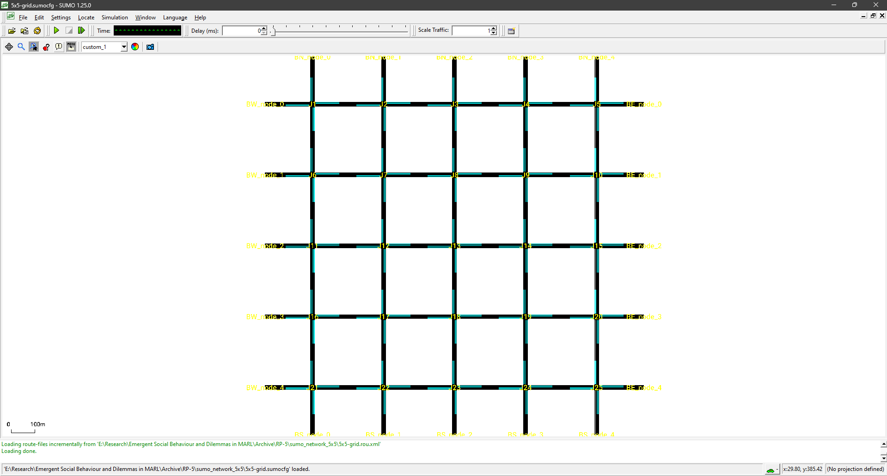
The network builds and runs, and a training run was attempted. The obstacle was purely one of compute: a single training iteration took on the order of nine to twelve hours on the available hardware, against the roughly forty-eight hours a full 2×2 run takes for 200 iterations. Extrapolated out, a converged 5×5 run would have taken months of uninterrupted GPU time on one machine. The run was therefore aborted, and the scale-up was re-scoped as future work. The constructed network is reported here as concrete evidence that the scale-up is an engineering and compute problem rather than an open design question — the experiment is ready to run the moment sufficient compute is available, and Chapter 9 explains why it is the single most important next step.
Chapter 7Results and Analysis
The findings are presented in the order that tells the story. The cooperative controller is first shown to train well and to beat the heuristic baselines under a fair evaluation; it is then confirmed to be a faithful implementation of the published method (the external comparison); and finally it is set head-to-head against independent learners (the internal comparison), with a result that inverts the natural expectation.
7.1 Training Convergence
The MAPPO controller trains stably to convergence over 200 iterations. The mean episode reward climbs from −2756.5 at initialization to a converged last-ten-iteration mean of −49.76 ± 0.41, as shown in Figure 7.1. The centralized critic is accurate, reaching a value-function explained variance of 0.907, and the policy updates stay conservative, with an average KL divergence of 0.0034 across the final iterations (Figure 7.2). Read together, these say the actor and critic are being optimized jointly and healthily, with no divergence, no value collapse, and the small, controlled steps that PPO's clipping is meant to produce.
The shape of the learning curve in Figure 7.1 is itself informative. The run passes through the phases one expects from a well-posed RL problem. In the earliest iterations the policy is essentially random, the network jams, and the reward is deeply negative with high variance as the agents thrash around the state space. There follows a rapid-improvement phase in which the bulk of the gain is made: the agents discover the basic competence of clearing queues and keeping approaches flowing, and the reward climbs steeply. The curve then bends into a slower fine-tuning phase, where the remaining gains come from refining timing rather than from gross behavioural change, before flattening into the stable plateau near −50 that defines convergence. That the final ten iterations sit within a band of less than half a reward point of each other is the quantitative signature of a policy that has stopped meaningfully changing — which is the right moment to freeze a checkpoint and evaluate it.
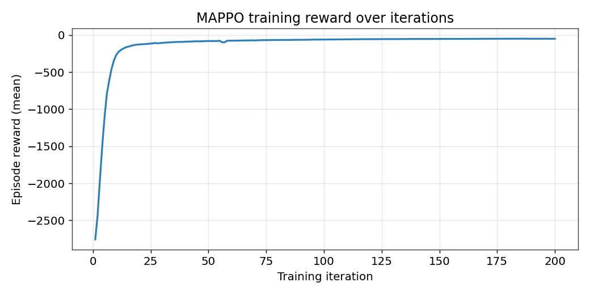
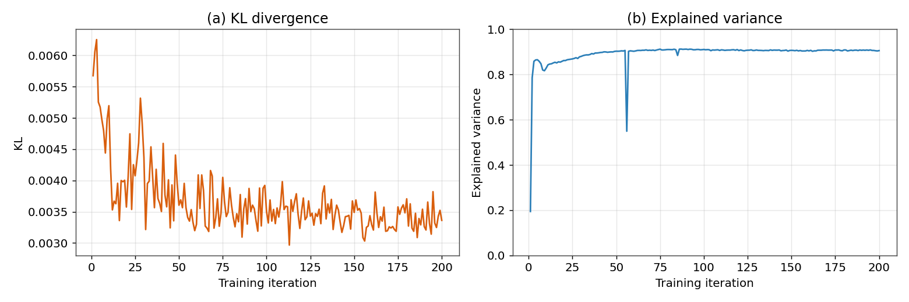
The remaining training diagnostics, shown in Figure 7.3, tell the same story from a different angle. Policy entropy decays gradually from its near-maximum starting value toward roughly 0.6, well short of zero, which means the policy sharpened steadily as it learned good actions without collapsing prematurely onto a single deterministic habit. The value loss falls by more than an order of magnitude and then flattens, while the policy loss stays small and noisy throughout — exactly the pattern of a critic that learns its targets while the clipped policy makes only small, controlled moves. None of these curves shows the spikes or runaway growth that would signal an unstable run.
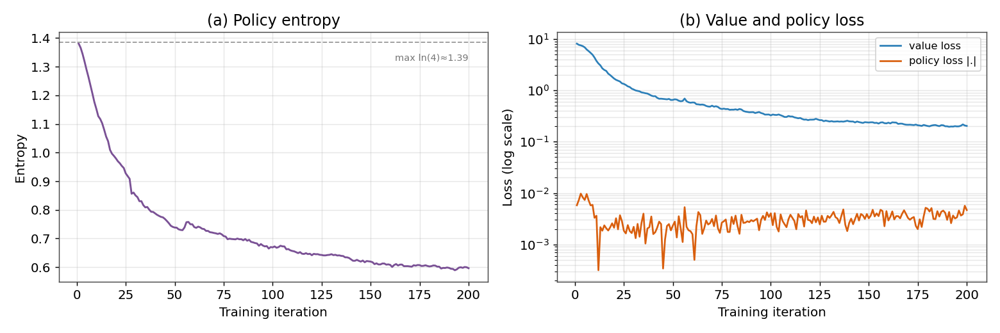
7.2 Comparison Against Heuristic Baselines (Fair Clearance)
One fairness point has to be settled before any baseline number can be trusted. The learned agents pay a 3-second all-red safety clearance on every phase change — a realistic constraint they were trained under — whereas the heuristic controllers would otherwise switch with no such clearance, which is not a cost any real signal escapes. To compare like with like, every controller is therefore charged the same 3-second clearance. Under this fair, matched-clearance protocol, summarized in Table 7.1 and Figure 7.4, the learned controllers win decisively: the MAPPO controller averages 9.92 ± 0.65 s, against 21.63 ± 1.00 s for max-pressure and 47.03 ± 0.59 s for fixed-time. MAPPO beats max-pressure by roughly a factor of two and fixed-time by nearly a factor of five, with a Welch t-statistic against max-pressure of about 22 (p < 0.001).
| Controller | Avg waiting time (s) |
|---|---|
| MAPPO | 9.92 ± 0.65 |
| IPPO | 10.34 ± 0.31 |
| Paper-baseline | 10.21 ± 0.28 |
| Max-Pressure | 21.63 ± 1.00 |
| Fixed-Time | 47.03 ± 0.59 |
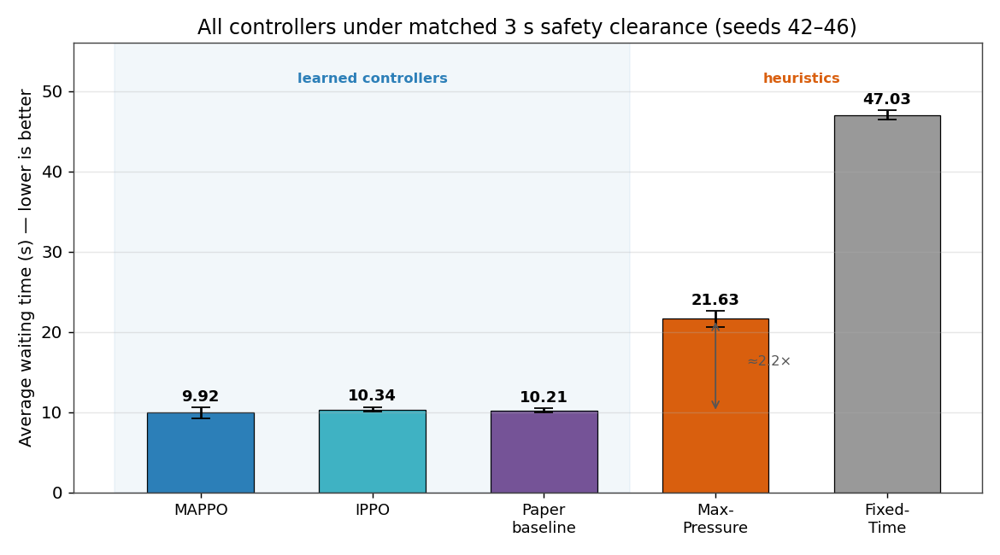
The gap is not marginal: the learned controllers cut average waiting time to less than half of max-pressure's and roughly a fifth of fixed-time's, and they do so while paying exactly the same safety cost. That both MAPPO and IPPO land in the same tight band near 10 s — well clear of either heuristic — is the first hint of the result that the rest of the chapter develops: the learning is what matters here, not which learned algorithm is used.
7.3 External Comparison: Our MAPPO versus the Published Recipe
To rule out the possibility that the cooperative controller is an under-powered strawman, it is compared against the canonical MAPPO recipe of Yu et al. [14] with its wider 512×512 networks (Chapter 6, Table 6.2). The two are statistically indistinguishable on average wait — 9.92 ± 0.65 s for the project's MAPPO against 10.21 ± 0.28 s for the paper recipe, a Welch t-test giving p = 0.388 — with the project's configuration in fact numerically slightly ahead. Table 7.3 shows that this holds across the board: the only metric on which they differ significantly is the phase-switch count, where the project's MAPPO switches more often. The implemented MAPPO is therefore a faithful and competitive representative of the method, which is exactly what makes the comparison that follows meaningful — any failure to beat independent learners cannot be blamed on a weak MAPPO.
There is a small but pleasing twist buried in this comparison. The project's MAPPO uses narrower networks than the published recipe (256×256 against 512×512) and a far tighter gradient clip (1.0 against 10.0), yet it converges to a marginally better training reward and matches the paper-baseline on every traffic metric. This should not be over-read — the differences are within noise on the outcome metrics — but it does suggest that, for a problem of this size, raw network capacity was never the binding constraint, and that the tighter, more conservative optimization actually helped rather than hurt. It is a useful reminder that bigger is not automatically better in deep RL, and that the stability a small clip buys can be worth more than the expressiveness a wide network offers when the task does not demand that expressiveness.
| Metric | Project MAPPO | Paper-baseline | p-value |
|---|---|---|---|
| Average wait (s) | 9.92 ± 0.65 | 10.21 ± 0.28 | 0.388 |
| Average halting | 3.91 ± 0.11 | 4.04 ± 0.27 | 0.355 |
| Maximum halting | 14.2 ± 1.6 | 14.6 ± 1.7 | 0.713 |
| Completed trips | 1261.6 ± 0.9 | 1261.6 ± 0.5 | 1.000 |
| Phase switches | 1391 ± 12 | 1319 ± 23 | 0.0008 |
Figure 7.5 places all three learned controllers side by side across the outcome metrics. The bars sit on top of one another for average wait, average and maximum halting; only the phase-switch panel separates them, with the paper-baseline switching least and the project's MAPPO most. In other words, the project's MAPPO, the published recipe, and the independent learner all deliver the same traffic performance, and differ only in how restlessly they switch — a theme the next section makes central.
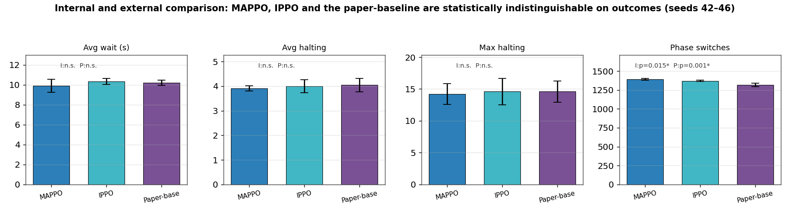
7.4 Internal Comparison: Coordination Value ≈ 0
MAPPO is the sophisticated, theoretically motivated choice. Its centralized critic is designed precisely to tame non-stationarity and solve credit assignment, and its neighbour-coupled reward explicitly encodes coordination. The natural expectation is that it beats a set of independent learners that ignore all of this. It does not.
Against IPPO — identical in every respect except its decentralized critic and its purely local reward — MAPPO is statistically indistinguishable on every traffic-performance metric across five seeds, as Table 7.2 and Figure 7.6 show. Average waiting time (p = 0.236), average halting (p = 0.534), maximum halting (p = 0.745) and completed trips (p = 0.545) all show no significant difference. The only reliable difference is that MAPPO performs about 21 more phase switches per episode (1391 ± 12 versus 1370 ± 8, p = 0.015) — extra control activity that yields no measurable performance benefit. The coordination value, defined as MAPPO − IPPO, is therefore approximately zero on this network.
| Metric | MAPPO | IPPO | p-value |
|---|---|---|---|
| Average wait (s) | 9.92 ± 0.65 | 10.34 ± 0.31 | 0.236 |
| Average halting | 3.91 ± 0.11 | 4.00 ± 0.27 | 0.534 |
| Maximum halting | 14.2 ± 1.6 | 14.6 ± 2.1 | 0.745 |
| Completed trips | 1261.6 ± 0.9 | 1261.2 ± 1.1 | 0.545 |
| Phase switches | 1391 ± 12 | 1370 ± 8 | 0.015 |
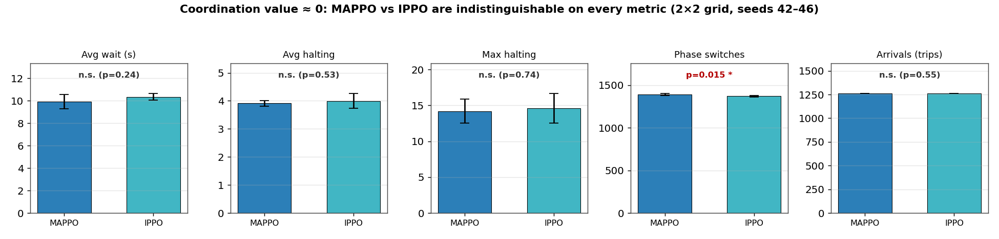
Figure 7.7 drills into the headline metric one level further, plotting the individual per-seed average-wait values rather than just their summaries. The point of the plot is the overlap: the five MAPPO seeds, the five IPPO seeds, and the five paper-baseline seeds form three clouds that sit on top of one another, and the small mean differences are dwarfed by the seed-to-seed spread within each controller. This is what "statistically indistinguishable" looks like at the level of the raw data — there is no clean separation to be found, in either direction.
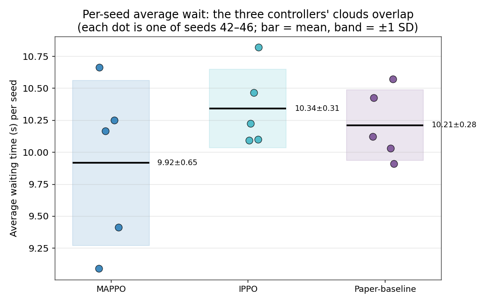
7.5 Learned Behaviour and the Meaning of the Switch Gap
Numbers aside, it is worth describing what the trained controllers actually do, since the behaviour is what makes the near-zero coordination value believable rather than suspicious. Both learned controllers settle into adaptive phasing that tracks the demand profile: they hold greens longer on the loaded approaches during the rush hour and cycle more evenly when traffic is light. They also learn a form of offset timing across the grid, so that a platoon released by one intersection tends to meet a green at the next rather than piling into a fresh queue — the network-level behaviour the neighbour features were meant to encourage. The telling point is that IPPO arrives at essentially the same behaviour without a centralized critic or a neighbour-coupled reward, simply because parameter sharing and local optimization, on a network this tightly coupled, are enough to rediscover it.
This also reframes the one statistically significant difference, the phase-switch count. MAPPO switches about 21 more times per episode than IPPO, and it is tempting to read more switching as more responsiveness. But the performance metrics flatly contradict that reading: the extra switches come with no reduction in waiting time, queueing, or any other outcome. Given that every switch costs a three-second all-red clearance (Section 6.6), the additional switching is, if anything, slightly wasteful — it spends green time without buying anything. The most honest interpretation is that the neighbour-pressure term gives MAPPO a marginally more restless policy that reacts to neighbour state more often, but on a four-intersection grid that restlessness has no outcome to improve. It is a difference in style, not in quality.
Finally, the convergence diagnostics reinforce that none of this is an artefact of undertraining or instability. Entropy decayed gradually rather than collapsing, so the policies retained a healthy degree of stochasticity instead of locking prematurely onto a single action; the value and policy losses fell smoothly; and the explained variance settled high. Both controllers were trained under identical conditions for the same 200 iterations, so the comparison is not confounded by one being trained harder than the other. When two methods converge cleanly and then prove indistinguishable on outcomes, the most defensible conclusion is the literal one: at this scale, the extra machinery simply is not needed.
Chapter 8Discussion
The results of Chapter 7 invert the expectation that frames most of the cooperative-MARL literature. This chapter asks why, weighs the genuine strengths and the real limitations of the project's MAPPO, and turns the negative result into a testable hypothesis about scale.
8.1 Why the Coordination Value Is Near Zero
The most parsimonious explanation is that, at this scale, there is simply little coordination left for an explicit mechanism to add. A 2×2 grid has only four intersections, each adjacent to two neighbours, and the traffic-control reward is already locally informative: on a network this tightly coupled, minimizing one's own queue and waiting time is almost the same objective as minimizing the network's. The incentives are, in other words, already aligned by the structure of the problem. The centralized critic still provides a lower-variance value estimate, and the neighbour-pressure term still nudges behaviour toward network awareness, but an independent learner equipped with the same local observations and the same parameter sharing can discover the same coordinated phasing on its own. Coordination here is emergent rather than engineered: it falls out of independent optimization because the environment never rewards defection.
Two details reinforce this reading. First, both learned controllers decisively beat the heuristic baselines under matched clearance, so the learning is doing real work — it is not that the task is trivial, but that the coordination-specific additions are redundant on top of what local learning already achieves. Second, MAPPO's extra phase switches buy no improvement, which is exactly what one would expect from a centralized critic that is active but not pivotal: it shapes the policy slightly differently without changing what the policy ultimately achieves.
There is a deeper way to see why the two methods land in the same place. The centralized critic and the neighbour reward are two different tools aimed at the same target: getting each agent to act as if it cared about the whole network rather than only its own corner. But on a 2×2 grid the agent's own reward already reflects the network almost perfectly, because the congestion it causes flows straight back to it within seconds. The information the centralized critic adds — what the other three intersections are doing — is largely redundant with what a local critic can already infer from its own queues and the spatially-discounted neighbour features every agent receives in its observation. In effect, both algorithms have access to enough signal to behave coordinately; MAPPO is handed that signal more explicitly, but IPPO can reconstruct it. When two routes lead to the same destination, it is no surprise that the travellers arrive together. The prediction this makes is sharp and testable: dilute the feedback loop by spreading the agents across a larger grid, so that an agent's own reward no longer captures the network's state, and the redundancy should break — which is the entire logic of the scale hypothesis below.
8.2 Strengths and Limitations of the Project's MAPPO
It would be a misreading of these results to conclude that the project's MAPPO is a poor controller. On the contrary, the external comparison in Chapter 7 shows it matching a carefully tuned published recipe, and the training curves show it converging cleanly. Its strengths and limitations are summarized in Table 8.1 and discussed below.
On the strengths side, the most important property is stable, well-behaved learning, and this is a direct consequence of PPO's clipped objective. The clip keeps every policy update inside a trust region, which is visible in the consistently small KL divergence of about 0.0034 and in the smooth, monotone reward curve of Figure 7.1. Interestingly, the project's MAPPO actually edges out the wider paper-baseline on training reward despite using smaller networks and a tighter gradient clip (1.0 versus 10.0); the tighter clip trades a little raw capacity for steadier optimization, and on this problem that trade pays off. The centralized critic contributes a high explained variance (about 0.91), meaning value targets are accurate and the advantages fed to the actor are low-variance. Parameter sharing across the four homogeneous intersections makes the method sample-efficient, since every agent's experience trains the one shared policy.
On the limitations side, the headline finding is itself the central limitation: at this scale the cooperative machinery is redundant. The centralized critic requires the 280-dimensional global state during training, which is an architectural and bookkeeping burden that an independent learner avoids entirely, and it produces no measurable payoff here. The neighbour-coupled reward adds a hyperparameter (the coupling weight) that must be tuned, again for no measured benefit at 2×2. The one behavioural difference MAPPO does exhibit — about 21 extra phase switches per episode — is, if anything, a mild inefficiency: every switch costs a 3-second all-red clearance, so more switching is more wasted green time, and it buys nothing. And the global-state requirement is the very thing that makes the method expensive to scale, since the critic input grows with the number of agents (1,750 dimensions at 5×5), which interacts badly with the compute wall documented in Chapter 6.
| Strengths | Limitations |
|---|---|
| Stable updates from PPO clipping (KL ≈ 0.0034) | Coordination machinery redundant at 2×2 scale |
| Accurate critic (explained variance ≈ 0.91) | Centralized critic needs 280-dim global state in training |
| Edges out the wider paper-baseline on training reward | Extra coupling-weight hyperparameter to tune |
| Sample-efficient via parameter sharing | ~21 extra, performance-neutral phase switches per episode |
| Beats both heuristics ~2×–5× under fair clearance | Global-state critic scales poorly (1,750 dim at 5×5) |
8.3 The Scale Hypothesis
If the coordination value is small because the network is small, then it should grow with scale, and that is the hypothesis this work sharpens. As a grid enlarges, an agent's actions influence ever more distant intersections through longer chains of traffic; the gap between "minimize my own delay" and "minimize the network's delay" widens, the non-stationarity each single learner faces intensifies, and the centralized critic's access to the global state should begin to translate into a measurable advantage. This is exactly the regime in which network-level cooperation has been shown to matter: CoLight demonstrates clear gains from sharing neighbour information at city scale [20], and the large-scale study of Chu et al. reports that neighbour-aware, carefully designed shared rewards improve performance while naive individual rewards can actively harm throughput [22]. The near-zero coordination value measured here is therefore not in tension with that literature; it is the expected small-scale end of the same curve.
8.4 Implications
The practical implication is a note of caution paired with a research direction. The caution is that, on small or tightly coupled multi-agent problems, the considerable machinery of CTDE may be unnecessary: a simpler independent-learning approach with parameter sharing can match it at lower implementation and training cost. The research direction is that the value of coordination should be treated as a quantity that depends on system scale and on how strongly incentives conflict, rather than as a fixed property of an algorithm. The controlled traffic setting used here establishes a clean zero-point for that quantity, against which both larger networks and genuine social dilemmas can be measured — which is precisely what the future work proposes.
8.5 Threats to Validity
A negative result invites a fair challenge: is it real, or did the experiment simply fail to give coordination a chance to shine? Several checks were built in specifically to answer that. The first worry is a weak MAPPO — perhaps the cooperative agent was under-powered, so of course it failed to pull ahead. The external comparison rebuts this directly: the project's MAPPO matches a carefully tuned published recipe on every metric, so it is a faithful, competitive implementation rather than a strawman. The second worry is an unfair evaluation — perhaps the protocol favoured one controller. The fairness work cuts the other way: the matched-clearance correction actually exposed and removed a bias that had favoured the heuristics, and MAPPO and IPPO are evaluated under identical conditions, so nothing in the protocol advantages the independent learner.
A third worry concerns statistical power. With five seeds, could a genuine MAPPO advantage be hiding below the noise? Two things make this unlikely to overturn the conclusion. The effect sizes are not merely non-significant, they are tiny — the average-wait gap is a few tenths of a second on a ten-second baseline, and it points slightly in IPPO's favour rather than MAPPO's. And because the demand schedule is deterministic, the seed-to-seed variation is genuinely micro-level, which is why the standard deviations are small and the means are stable. A larger seed sweep might sharpen the p-values, but it would not turn a fraction-of-a-second, wrong-signed gap into a meaningful coordination advantage. The honest scope of the claim is therefore narrow and defensible: on this demand scenario, at this network size, the coordination value is indistinguishable from zero. Whether it stays that way as the network grows is an empirical question — and the central one the future work is designed to settle.
Chapter 9Future Work
The central finding — that an explicit coordination mechanism buys essentially nothing over independent learners on a 2×2 traffic network — is best read not as an endpoint but as a precisely located starting point. Three directions follow directly, the first two of which were placed beyond this submission by compute constraints rather than by design.
9.1 Network Scale-Up (2×2 → 5×5)
The most direct test of the interpretation in Chapter 8 is to grow the network. If the coordination value is near zero because a 2×2 grid is small enough that incentives are already locally aligned, then enlarging the network to 5×5 (25 intersections) should widen the gap between MAPPO and IPPO: distant intersections interact through longer traffic chains, non-stationarity intensifies, and the centralized critic's global view should begin to pay off. This expectation is consistent with the large-scale findings of Chu et al. [22] and the network-level cooperation of CoLight [20]. As Chapter 6 documented, the 5×5 SUMO network was already built and a training run attempted, but a single iteration took nine to twelve hours on a single GPU, so training it to convergence exceeded the available budget. The experiment is therefore ready to run the moment sufficient compute is available — it is the single most important next step, and the one most likely to confirm or refute the scale hypothesis.
It is worth being precise about what a 5×5 run would measure, because the value of the experiment lies in its design rather than in merely "trying a bigger grid." The quantity of interest is the same coordination value — MAPPO minus IPPO — recomputed at the larger scale, using the identical controlled setup so that the only thing that has changed between the 2×2 and 5×5 measurements is the network size. If the coordination value remains near zero, the redundancy argument of Chapter 8 generalizes and the cooperative machinery is genuinely optional for traffic of this kind; if it grows, the scale hypothesis is confirmed and one could even begin to chart how fast it grows with the number of agents. Either outcome is informative, which is the mark of a well-posed experiment. The practical obstacle is purely the cost of generating the data: with a single GPU and SUMO steps that now simulate twenty-five intersections' worth of vehicles, a converged run is a matter of weeks to months of uninterrupted compute, which is exactly the kind of resource a larger machine or a modest cluster would unlock.
9.2 Extending to a Social Dilemma
Traffic occupies the pure-coordination end of the spectrum: incentives are aligned, so there is nothing to defect over. The complementary experiment is to move to the opposite pole — a sequential social dilemma in which defection is individually tempting but collectively harmful. A natural choice is an apple-harvesting commons in the style of Leibo et al. [18], where agents collect a slowly regrowing resource and over-harvesting permanently depletes it. There, the reward-structure axis — individual versus shared rewards — that is essentially inert in traffic should become decisive, allowing a direct study of when shared rewards are necessary to sustain cooperation versus when independent learning suffices. Contrasting the learned behaviours across the two environments would complete the coordination–dilemma spectrum this project set out to chart.
9.3 Efficiency–Equity Analysis
Finally, the per-agent breakdowns already collected in this project can support a fairness analysis — for instance, a Gini coefficient computed over per-intersection outcomes — to ask whether high system performance requires treating some intersections markedly worse than others. That question is fairly muted on a symmetric 2×2 grid, but it becomes pointed at larger scales and sharper still in dilemma settings, where the temptation to exploit can translate directly into unequal outcomes. Taken together, the three directions turn a single clean negative result into a programme of work along both axes of the spectrum — scale and incentive conflict.
Chapter 10Conclusion
This dissertation set out to test a simple but consequential question on a controlled traffic benchmark: does an explicitly cooperative multi-agent algorithm actually outperform a set of independent learners when the two are matched in every other respect? The investigation produced a clear, and initially surprising, answer.
A MAPPO traffic-signal controller was implemented on a 2×2 grid, trained to stable convergence, and shown — under a fair, matched-clearance evaluation — to outperform both the fixed-time and max-pressure heuristics decisively. A methodological point underpins that result: the comparison is only fair when every controller is charged the same realistic safety clearance, and once that matched-clearance protocol is applied the learned controllers win by a wide margin. The project's MAPPO was further confirmed to be a faithful implementation by matching the canonical published recipe of Yu et al. on every traffic-performance metric.
The central result is that, against this strong and faithful MAPPO, an Independent PPO comparator — differing only in its decentralized critic and purely local reward — proved statistically indistinguishable on every traffic-performance metric. The sophisticated coordination machinery bought no measurable advantage; its only distinguishing behaviour was a slightly higher rate of phase switching that produced no benefit. On a 2×2 network, the coordination value is approximately zero.
The interpretation is not that coordination is worthless, but that the testbed is too small to require it: at this scale incentives are already locally aligned, and independent learners recover coordinated behaviour implicitly. This precisely locates where explicit coordination should begin to matter — at larger network scales — and motivates the future work of scaling to 5×5 (already built, and awaiting only compute) and of extending the study to genuine social dilemmas, where reward structure and the temptation to defect are expected to make coordination indispensable. The contribution of this work is thus both a careful negative result and a sharpened hypothesis: the value of cooperation in multi-agent reinforcement learning is not a constant but a function of scale, and the controlled traffic setting established here is the baseline against which that function can now be measured.
BibliographyReferences
- R. S. Sutton and A. G. Barto, Reinforcement Learning: An Introduction, 2nd ed. Cambridge, MA: MIT Press, 2018.
- C. J. C. H. Watkins and P. Dayan, "Q-learning," Machine Learning, vol. 8, no. 3–4, pp. 279–292, 1992.
- V. Mnih, K. Kavukcuoglu, D. Silver, et al., "Human-level control through deep reinforcement learning," Nature, vol. 518, no. 7540, pp. 529–533, 2015.
- V. Mnih, A. P. Badia, M. Mirza, et al., "Asynchronous methods for deep reinforcement learning," in Proc. 33rd Int. Conf. on Machine Learning (ICML), 2016, pp. 1928–1937.
- R. J. Williams, "Simple statistical gradient-following algorithms for connectionist reinforcement learning," Machine Learning, vol. 8, no. 3–4, pp. 229–256, 1992.
- J. Schulman, F. Wolski, P. Dhariwal, A. Radford, and O. Klimov, "Proximal policy optimization algorithms," arXiv preprint arXiv:1707.06347, 2017.
- J. Schulman, P. Moritz, S. Levine, M. Jordan, and P. Abbeel, "High-dimensional continuous control using generalized advantage estimation," in Proc. Int. Conf. on Learning Representations (ICLR), 2016.
- V. R. Konda and J. N. Tsitsiklis, "Actor-critic algorithms," in Advances in Neural Information Processing Systems (NeurIPS), vol. 12, 2000, pp. 1008–1014.
- M. Tan, "Multi-agent reinforcement learning: Independent vs. cooperative agents," in Proc. 10th Int. Conf. on Machine Learning, 1993, pp. 330–337.
- R. Lowe, Y. Wu, A. Tamar, J. Harb, P. Abbeel, and I. Mordatch, "Multi-agent actor-critic for mixed cooperative-competitive environments," in Advances in Neural Information Processing Systems (NeurIPS), vol. 30, 2017.
- J. Foerster, G. Farquhar, T. Afouras, N. Nardelli, and S. Whiteson, "Counterfactual multi-agent policy gradients," in Proc. 32nd AAAI Conf. on Artificial Intelligence, 2018, pp. 2974–2982.
- P. Sunehag, G. Lever, A. Gruslys, et al., "Value-decomposition networks for cooperative multi-agent learning based on team reward," in Proc. 17th Int. Conf. on Autonomous Agents and Multiagent Systems (AAMAS), 2018, pp. 2085–2087.
- T. Rashid, M. Samvelyan, C. Schroeder de Witt, G. Farquhar, J. Foerster, and S. Whiteson, "QMIX: Monotonic value function factorisation for deep multi-agent reinforcement learning," in Proc. 35th Int. Conf. on Machine Learning (ICML), 2018, pp. 4295–4304.
- C. Yu, A. Velu, E. Vinitsky, Y. Wang, A. Bayen, and Y. Wu, "The surprising effectiveness of PPO in cooperative multi-agent games," arXiv preprint arXiv:2103.01955, 2021.
- L. Busoniu, R. Babuska, and B. De Schutter, "A comprehensive survey of multiagent reinforcement learning," IEEE Trans. on Systems, Man, and Cybernetics, Part C, vol. 38, no. 2, pp. 156–172, 2008.
- P. Hernandez-Leal, B. Kartal, and M. E. Taylor, "A survey and critique of multiagent deep reinforcement learning," Autonomous Agents and Multi-Agent Systems, vol. 33, no. 6, pp. 750–797, 2019.
- S. Gronauer and K. Diepold, "Multi-agent deep reinforcement learning: A survey," Artificial Intelligence Review, vol. 55, no. 2, pp. 895–943, 2022.
- J. Z. Leibo, V. Zambaldi, M. Lanctot, J. Marecki, and T. Graepel, "Multi-agent reinforcement learning in sequential social dilemmas," in Proc. 16th Int. Conf. on Autonomous Agents and Multiagent Systems (AAMAS), 2017, pp. 464–473.
- G. Hardin, "The tragedy of the commons," Science, vol. 162, no. 3859, pp. 1243–1248, 1968.
- H. Wei, N. Xu, H. Zhang, et al., "CoLight: Learning network-level cooperation for traffic signal control," in Proc. 28th ACM Int. Conf. on Information and Knowledge Management (CIKM), 2019, pp. 1913–1922.
- P. Varaiya, "Max pressure control of a network of signalized intersections," Transportation Research Part C, vol. 36, pp. 177–195, 2013.
- T. Chu, J. Wang, L. Codecà, and Z. Li, "Multi-agent deep reinforcement learning for large-scale traffic signal control," IEEE Trans. on Intelligent Transportation Systems, vol. 21, no. 3, pp. 1086–1095, 2020.
- W. Genders and S. Razavi, "Using a deep reinforcement learning agent for traffic signal control," arXiv preprint arXiv:1611.01142, 2016.
- E. van der Pol and F. A. Oliehoek, "Coordinated deep reinforcement learners for traffic light control," in NeurIPS Workshop on Learning, Inference and Control of Multi-Agent Systems, 2016.
- P. A. Lopez, M. Behrisch, L. Bieker-Walz, et al., "Microscopic traffic simulation using SUMO," in Proc. 21st IEEE Int. Conf. on Intelligent Transportation Systems (ITSC), 2018, pp. 2575–2582.
- E. Liang, R. Liaw, R. Nishihara, et al., "RLlib: Abstractions for distributed reinforcement learning," in Proc. 35th Int. Conf. on Machine Learning (ICML), 2018, pp. 3053–3062.
- A. Paszke, S. Gross, F. Massa, et al., "PyTorch: An imperative style, high-performance deep learning library," in Advances in Neural Information Processing Systems (NeurIPS), vol. 32, 2019, pp. 8024–8035.